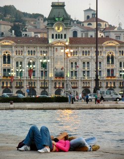

Several years ago, my wife and I decided to produce a photo CD of our home town Trieste, a beautiful city and port in northeastern Italy near the Slovenian border. We collected numerous pictures and selected the best 300 for the CD, including landscapes, food and panoramas. With mixed feelings, we decided it was time to discontinue the CD (old digital world), but we are happy to share these images with all of you under the copyright free license called Creative Commons (a small contribution to the social media travel community). Next time you're visiting Venice, if you want a nice day trip off-the-beaten path, jump on a train for a couple of hours and visit Trieste. We hope these pictures will entice you to do so. - View Trieste CD photos as a slideshow - Download Trieste CD photos from Flickr.com